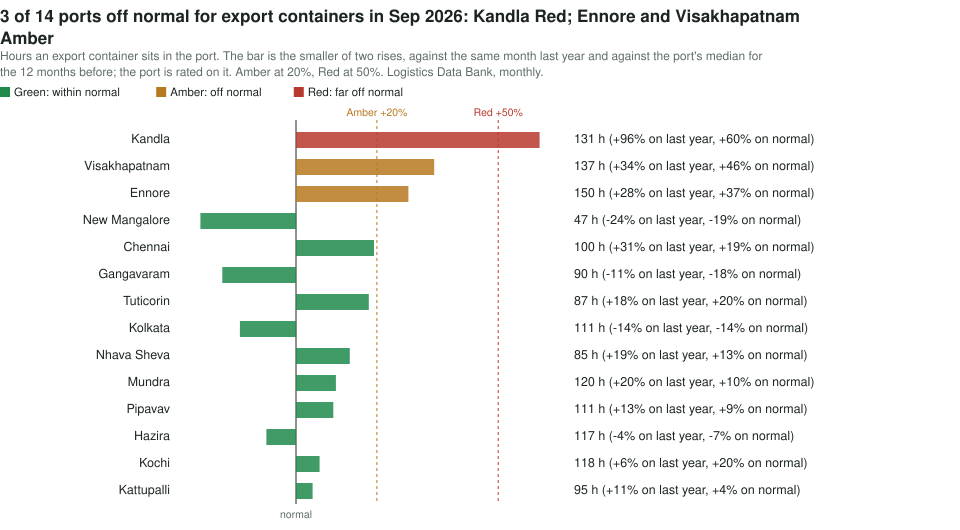
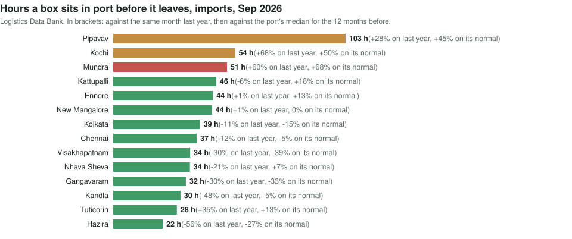
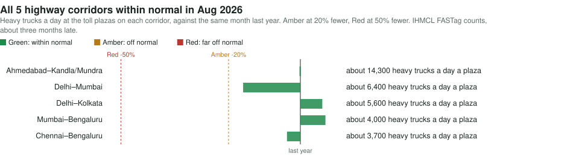
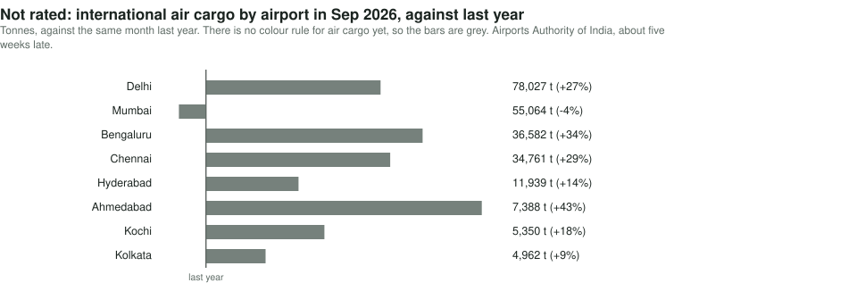
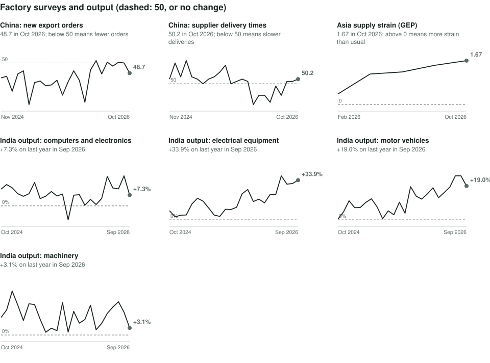

Monthly readings
The readings that come out once a month: how long containers sit in port, trucks on the highways, cargo by port and airport, e-way bills, factories at home and in China, prices and labour. The colours on the globe for container dwell and highway corridors come from here.
How fresh each reading is
The newest reading on file for each source, when the next one is normally out, and whether it has arrived. "Late" means the source has not published, or our fetch has not picked it up; either way the readings below it are older than they should be.
| Source | Latest reading | Next | Status | From |
|---|---|---|---|---|
| Container dwell (Logistics Data Bank) | Sep 2026 | was due 16 Nov | late | mid-month after |
| Highway trucks (IHMCL toll plazas) | Aug 2026 | by 8 Jan | on time | about three months after |
| Cargo by port (Ministry of Ports) | Sep 2026 | was due 12 Nov | late | about the 10th |
| Air cargo by airport (AAI) | Sep 2026 | by 8 Dec | on time | about five weeks after |
| Consumer prices (MoSPI) | Oct 2026 | by 14 Dec | on time | about the 12th |
| Wholesale prices (MoSPI) | Apr 2026 | was due 16 Jun | late | about the 14th |
| Unemployment (MoSPI) | Oct 2026 | by 17 Dec | on time | about the 15th |
| Metals (World Bank) | Oct 2026 | by 6 Dec | on time | first week after |
| China factory survey (NBS) | Oct 2026 | by 2 Dec | on time | last day of the month |
| India factory output (MoSPI) | Sep 2026 | by 30 Nov | on time | about the 28th after |
| E-way bills (GSTN) | Aug 2026 | was due 12 Oct | late | about the 10th |
Container dwell
Hours a container sits in the port, against the same month last year and the port's own normal. Amber at 20% over both, Red at 50%.


Logistics Data Bank, monthly.
Highway trucks
Heavy trucks a day at the toll plazas on each corridor, against the same month last year. Amber at 20% fewer, Red at 50% fewer. The counts come out about three months late.

IHMCL FASTag counts.
Cargo by port, Sep 2026
All cargo handled at each major port, overseas and coastal, against the same month last year, biggest port first.
| Port | Cargo | On last year |
|---|---|---|
| Deendayal (Kandla) | 19.4 million t | +48% |
| Paradip | 11.5 million t | -5% |
| JNPA (Nhava Sheva) | 9.9 million t | +18% |
| Visakhapatnam | 7.1 million t | -7% |
| Mumbai | 6.3 million t | 0% |
| Chennai | 5.0 million t | +6% |
| Kamarajar (Ennore) | 4.6 million t | +18% |
| New Mangalore | 4.5 million t | +1% |
| Haldia | 4.4 million t | +15% |
| V.O. Chidambaranar (Tuticorin) | 3.8 million t | +13% |
| Cochin | 3.0 million t | +16% |
| Kolkata | 1.5 million t | +15% |
| Mormugao | 1.4 million t | -8% |
Ministry of Ports, Shipping and Waterways, monthly cargo report.
Air cargo

Airports Authority of India.
E-way bills, Aug 2026
137 million e-way bills were raised for goods moving by road, rail and air across India, +7% on the same month last year. Every consignment worth over ₹50,000 needs one, so it is the widest measure of goods on the move.
GST Network e-way bill statistics.
Factories
China's factory survey (above 50 means growing), supply strain across Asia, and India's factory output by sector against last year.

China's National Bureau of Statistics; GEP; MoSPI index of industrial production.
Prices
What it costs to make and move goods: consumer and wholesale prices, the fuels freight pays for, and the metals factories buy. "Transport services for goods" is the closest public measure of what road freight costs.
Consumer prices, Oct 2026, against a year before
| Inflation | |
|---|---|
| All consumer prices | +6.1% |
| Food and beverages | +8.5% |
| Transport | +5.8% |
| Transport services for goods | +7.3% |
| Electricity, gas and other fuels | +3.7% |
MoSPI consumer price index (base 2024), all India.
Wholesale prices, Apr 2026, against a year before
| Change | |
|---|---|
| All wholesale prices | +8.3% |
| Fuel and power | +24.7% |
| Diesel | +25.2% |
| Jet fuel | +142.6% |
| Manufactured goods | +4.6% |
MoSPI wholesale price index (base 2011-12). The MoSPI feed runs several months behind the published index.
Metals, Oct 2026
| Price | On last year | |
|---|---|---|
| Copper, a tonne | $14,508 | +35% |
| Aluminium, a tonne | $3,061 | +10% |
| Iron ore, a tonne | $90.8 | -12% |
World Bank commodity prices, monthly.
Labour
India's unemployment rate each month, everyone aged 15 and over. Strikes, walkouts and drivers going home for festivals show up first in the daily news scan; this is the slow background.
| Month | Unemployment rate |
|---|---|
| Oct 2026 | 4.9% |
| Sep 2026 | 5.0% |
| Aug 2026 | 5.0% |
| Jul 2026 | 5.1% |
| Jun 2026 | 5.5% |
| May 2026 | 5.5% |
MoSPI periodic labour force survey, monthly.
Part of the India Freight Monitor, rebuilt every morning from public data with no hand edits. I'm Priyanka Bharadwaj; if you move goods through India, get in touch on LinkedIn.